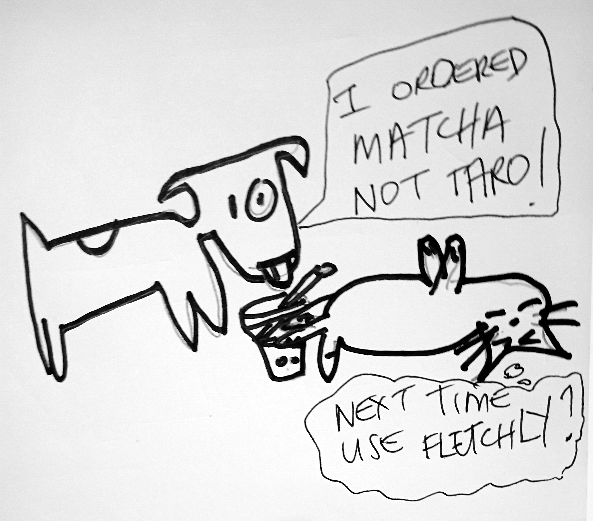

Print setup
Ctrl/Cmd + P · Paper size A4 · Margins: None · Scale: 100%
Issue 14 — Halloween pair, part 1 of 2. Reopens the full Issue 12 rotating pool (all 8).
Skeletor's In Memoriam runs long this issue (Halloween-special stretch). Cat vs Dog takes the
cartoon slot with a delivery-order mix-up gag, issues/cat-vs-dog-issue14.png
(hand-drawn, cleaned/embedded post-assembly 24 July 2026) — supersedes the originally
planned Nightmare Before Christmas crossover, which was only ever a text placeholder pending
real art. The werewolf-costume classified was swapped (same day) for a Halloween Fan Art
Spotlight: reader fan art of Jack Skellington, Sally and Zero
(issues/nightmare-jack-fanart.png,
issues/nightmare-sally-jack-fanart.png), disclosed as unaffiliated fan art since
both are verbatim depictions of the specific Disney characters, not a generic homage. Two
themed ad boxes: Fenwick Grove S'mores Co. and an Armageddon Expo save-the-date teaser (bigger
spread runs next issue, ahead of Labour Weekend). No Menace Watch this issue; due next issue
per the monthly tracker.
Auckland · Weekly Edition
BUBBLE TEA NEWS
Issue 14 · 16 October 2026 · Complimentary — please take onebubbletea.nz · est. 2026
Breaking · Oakhurst Lane
Synthetic Cobweb Confirmed On Eleven Properties, Not One Halloween Invitation Sent Yet
Case definition: any letterbox, verandah rail, or car aerial strung with synthetic cobweb ahead of any actual Halloween invitation going out. Eleven properties confirmed along Oakhurst Lane as of Wednesday, up from a single porch that started it after a two-for-one sale at the variety store. The neighbourhood's working theory (competitive dads, an unofficial scoring system nobody will admit to running) remains unconfirmed. Risk assessed low, except to anyone still owed a lawnmower back from July.
Community Outbreak Bulletin
World Affairs · The World Bulletin
The Trade Briefing Had An Uninvited Third Speaker
Baxter Kline
The assignment was straightforward: a trans-Tasman trade briefing, delivered live from a podium I was assured was secure. Forty seconds in, a gust took the backdrop and revealed a decorative skeleton already standing behind me, unexplained and unbilled. I continued through the tariff figures. The skeleton did not comment, which is more than I can say for the control room. This has been The World Bulletin. I'm Baxter Kline, and I have apparently been co-anchoring with a skeleton the network never mentioned.
Field Notes · Sanctuary Desk
Enclosure Four, Refusing The Dish, Taking It From The Hand Instead
Alan Grant
Enclosure 4, female, approximately eleven kilograms, refused the evening feed for the second night running before taking it directly from my hand instead of the usual dish. I used to read hesitation like that in a fracture pattern, a story about what happened, told by something that can't tell it any other way. She isn't injured. She just wanted it from a hand this time. I have spent a career being trusted by things I dug out of rock. Being trusted by something that could still prove me wrong about that trust is a different kind of evidence entirely.
Food · The Lasagna Standard
This Year's Pumpkin Boba Special, Rated: Three Lasagnas, One Docked For The Candy Corn Garnish
I have eaten at establishments that would reduce a Michelin inspector to tears, and I still made time this week for a bubble tea shop's limited pumpkin-spice special, garnished, inexplicably, with a single candy corn balanced on the lid like it had won something. Three lasagnas for the pumpkin base, which held its nerve. One full lasagna deducted for the candy corn, which no drink asked for and no drink deserved. Jon tried to eat his own candy corn "ironically." Odie ate the lid.
Garfield
Original Fiction
Day 6,204: A Costume Shop, A Question I Wasn't Asked
Wren
Six thousand two hundred four days since the mission that never technically ended, and I stood today in a costume shop's mirror aisle for eleven minutes, cataloguing which mask came closest. None did. A child asked if I was "supposed to be a robot for real" and I answered "not anymore" before I had fully decided that was true. She seemed satisfied. I am still counting the days since that was an acceptable answer to give a stranger.
Bubble Tea Trivia · Did You Know?
The Reminder Candy Shops And Boba Counters Share
Tapioca pearls have prompted real choking-hazard warnings over the years, chewy enough to catch in a small throat, the same reminder candy shops repeat about hard lollies and gummies every Halloween season.
In Every Issue
A new logic puzzle
Fresh local trivia
A rotating cast of columnists
Local ad space, weekly
Menace Watch, monthly — the editor's turn
"Grieve the bat, if sentiment still moves you toward objects. I confess I do not grieve so much as recognize an opening."
— Skeletor, In Memoriam, on the discontinued straw-topper
Joke of the Week
What do ghosts order at the bubble tea shop? Boo-ba tea.
BUBBLE TEA NEWS · A weekly complimentary read for Auckland bubble tea retailers · All content satire/character-voice per each contributor's house disclaimer.
Bubble Tea News
Books · The Duckworth Scale
A Ghost-Written Memoir By Somebody's Poltergeist, Reviewed
Five Duckworths, easily, for the first forty pages, where the poltergeist in question complains about being unfairly typecast as "spooky" when it just wants to be taken theriously as a percussionist. Then chapter six happened, four entire pages on a haunted lighthouse that never once mentioned a duck, and the rating dropped to one, retroactively, effective the first page. My editor, Mr. Pemberton, tells me a retroactive rating "isn't how reviews work." Mr. Pemberton also thought Wingspan only deserved four.
Daffy Duck
Automotive · Showroom Desk
Trick-Or-Treat Clearance At Route 9 Motors
Lewis Hamilton
Pole position on this week's clearance event goes to a 2019 sedan that's held its line through four owners and one reported haunting, neither of which shows up on the vehicle history report. Route 9 Motors is offering zero percent financing this weekend only, tighter than my out-lap at Silverstone, and a free bag of fun-size chocolate for every test drive, win or lose. Come switch it up. Come take the podium in something with genuinely excellent tyre wear for the money.
Investigations Desk
Exhibit A: The Costume That Was Definitely Purchased, Not Handmade
M. Voss
The claim, filed by a Fenwick Grove parent group, alleges a rival parent's "handmade" pirate costume bears a suspicious resemblance to a listing still live on three separate retail sites, tags included in the photo. The pattern doesn't lie. Nor, generally, does a price tag still stapled to a sleeve. I've weighed the alternative explanation, a genuine coincidence of design, and I find it wanting. Case remains open pending an actual receipt.
Puzzle of the Week
Which Costume Did Isla Actually Buy?
Last week's question, resolved: Bo didn't order the large, and Cy's order sat one size up from Ana's, among Small/Medium/Large. Only Ana = Medium, Cy = Large, Bo = Small satisfies both clues without contradiction. Ana ordered the medium.
Three costume-shop regulars (Isla, Jack, Theo) each bought a different costume this week, cheapest to priciest: Ghost ($8), Pumpkin ($12), Skeleton ($15).
Jack didn't buy the Ghost.
Theo's costume cost exactly one tier less than Isla's.
Which costume did Isla actually buy? Answer next week — Ken Endo
SAVE THE DATE
Armageddon Expo returns to Auckland this Labour Weekend. Bubble Tea News readers get queue-side coverage all three days — full spread next issue.
Parody placement, not a real Armageddon Expo ad; not affiliated with or endorsed by Armageddon Expo Ltd or Kiwibank.
In Memoriam · Halloween Special
The Passing Of The Complimentary Plastic Bat-Shaped Straw-Topper
Skeletor
Behold: another empire reduced to clearance-bin ash. The complimentary bat-shaped straw-topper, bestowed free upon every October purchase these past three seasons, has been discontinued this week in favour of "reducing single-use plastic," or so the official notice claims. I remember its reign. I remember when children fought over the last purple one, when the till-side tray overflowed with tiny plastic wings before November's flavourless austerity always arrived to end the fun. Grieve, if sentiment still moves you toward objects. I confess I do not grieve so much as recognize an opening. The tray sits empty now, unclaimed territory, and I have already sketched three proposals for what conquers it next, one of them a fanged reusable stirrer sold at margin, bearing my likeness. Eternia waits for no discontinued straw-topper, and neither, it turns out, does the shelf space. Mourn the bat. I, of course, already have.
Runs long this issue — the paper's Halloween-stretch special treatment.
Ask the Captain
Matching Costumes, Against My Will
Horatio McCallister
"My partner wants us to match costumes to a party this weekend and I hate whatever they've picked. Do I just wear it?" Aye, lad, a ship don't sail with two captains flying different colours off the same mast. Ye wear it proud, and save the mutiny for a fight worth losing a crew over. A matching costume ye hate for one night is a calm sea. Pick your storms wiser than that. Fair winds.
Film · The Refill Rating
New Release: A Slasher Set Inside An All-Night Convenience Store, Reviewed
Kate Rodgers
Hollow Register wants to be a lean, one-location slasher and mostly earns it, right up until the twenty-minute stretch where our final girl reorganises a snack aisle for reasons the script never explains. I know engineered-missable when I see it, and that aisle is where I made my first run, back for the second when the flashlight-batteries subplot finally announced itself. Two-refill picture, and both refills are on the editor, not the concept.
Halloween Fan Art Spotlight
Reader fan art of Jack Skellington, Sally and Zero from The Nightmare Before Christmas. Not affiliated with or endorsed by Disney.
Cat vs Dog

Cat vs Dog — Bubble Tea News's syndicated gag cartoon, a delivery-order mix-up one-off. Fletchly is this paper's own running in-universe delivery-app gag, not a real service.
Next week: Issue 15, Halloween's second week, brings Menace Watch (due per the monthly
tracker) and Hayaku's holiday-tournament special. Roster note: Issue 14 used the entire
reopened Issue 12 pool (Daffy Duck, Alan Grant, M. Voss, Wren, Garfield, Baxter Kline, the Te
Mana Whakaatu classifieds format, Lewis Hamilton) — Issue 15 shrinks the exclusion window
to Issue 14's roster only, reopening Issue 13's full cast (Sherman McCoy, Luke Skywalker, Priya
Anand, Dana Foley, Robin Leach, The Stickybeak, Sebastian, Winnie Zhao, Clem Whitlock) plus
Rebecca Black, Shaggy & Scooby, Richard Nixon, Steve Jobs and T. Marlow, none of whom has
run recently. Kate Rodgers remains a standing roster member. Cat vs Dog's turn and this
issue's extended Skeletor special are both part of the holiday stretch's suspended rotation
order, per the rotation log.